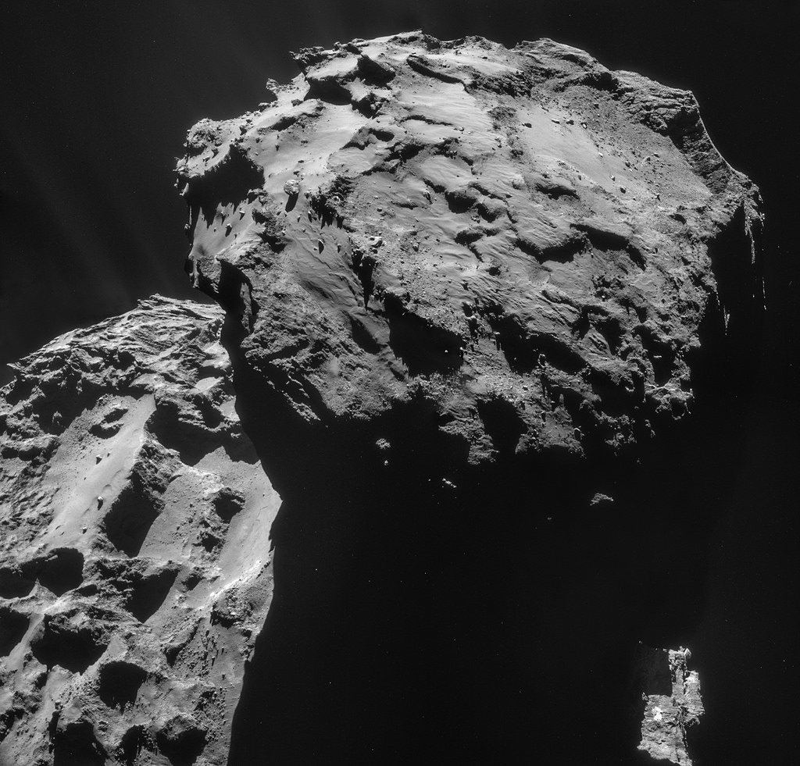

Where did all the water come from?
It was recently announced that the Rosetta space mission to the comet 67P/Churyumov-Gerasimenko found that water
contained by the comet did not resemble water on Earth. This has added to evidence that comets probably did not deliver the oceans to our planet billions of
years ago when it first formed. In that case, where did all the water come from and how can we be so sure about where it did not come from? Interestingly,
evidence is beginning to emerge that suggests the water may have been with us all along, deep below the surface.
Comets and asteroids have long been thought of as the key to the origin of Earth's oceans. When Earth first formed out
of the disc of dust and gas surrounding the young Sun, the inner part of the disc would have been heated to extremely high temperatures
(~1000 K, or about 700°C); hence, any water present would have vapourised. The only materials that could exist in a solid form (and therefore act as building blocks for the inner planets: Mercury, Venus,
Earth and Mars) were metals, such as iron. In the outer part of the disc, temperatures were low enough for water ice to exist. Hence, for water to have reached
the inner planets, it must have come from the outer solar system. This is the origin of the theory for ocean delivery via comet or asteroid strikes. However, there
is a problem with this story.

The water contained in comets appears to be very different to ocean water on Earth. Around one in every 10,000 water molecules
on Earth contain an atom of deuterium (a hydrogen atom with an extra neutron) instead of hydrogen, resulting in a molecule of heavy water. If ocean water
was delivered by comets, water onboard comets should have a similar ratio of ordinary water to heavy water. Recently, the Rosetta mission found that the water vapour
venting from the comet 67P/Churyumov-Gerasimenko (pictured right) had a hydrogen to deuterium ratio three times higher than Earth's oceans. Previous studies of other comets have found a wide
range of ratios. Of the 11 comets analysed, only one appears to have water that matches the composition of water on Earth. Not a compelling case for water delivery via comets,
but not enough information to completely rule the idea out either.
The case for water delivery via asteroids is more compelling. Studies of meteorites originating from the asteroid belt show that these tend to contain water
that is much closer (but not a direct match) to Earth's water composition. Asteroids contain much less water than comets, but a sustained asteroid bombardment of the early Earth could have provided the water we see around
us today. Given the variation in deuterium abundances in different asteroids, the lack of a direct match could be explained by the mixing of water from various asteroids as they collided with Earth. However, while asteroids may
well have played a part in the origin of Earth's water, there is another possibility emerging from Earth's inner depths.
Earlier this year, evidence for the existence of three ocean's worth of water was found in the mantle, about 700 km below the surface. This evidence came from the seismic waves generated by earthquakes
across the globe. These waves travel through the planet at different speeds, depending on the type of material they pass through. Therefore, by measuring the speeds of seismic waves at different depths, scientists were able to explore the composition of
Earth's deep interior. They could also infer the presence of water, because the waves take longer to pass through wet rock than dry rock. Just such a slowing down was observed at a depth of 700 km. The wave speed corresponded to the presence of a hydrous (water-containing) form of the mineral
ringwoodite. It is not yet known whether just an isolated pocket of this water-containing rock exists, or whether this hydrated belt
encircles the globe. If it does, this means that there is a lot more water on Earth than what we see covering the surface, which lends evidence to a third ocean origin theory. Rather than being delivered from elsewhere in the young solar system, some, or all, of Earth's water might
have been there from the beginning after all, escaping vapourisation by being bound up in hydrous minerals. Over time, as the Earth formed and cooled, high temperatures and pressures at depth could have "squeezed" the water out of the rock, allowing it to leach out of the planet, steadily forming oceans
on the surface.
For now, the source of Earth's water is still a mystery. We have some ideas, but nothing concrete yet. From an astrobiological perspective this is a fascinating mystery, because water is such an essential component for life on Earth and is key to
several origin-of-life-theories. Knowing exactly how and when liquid water first appeared on Earth would tell us more about the conditions that gave rise to life, and the conditions that could have given rise to life elsewhere in the solar system and beyond. Additionally, this information could tell
us more about how the habitability of our planet might change in the future. In about a billion years from now, a brighter Sun is expected to kickstart a process of rapid ocean evaporation. How would having three more oceans locked away in the mantle change the rate at which water is lost?
Without any water the planet would be uninhabitable. So, if there is more water down there, and if it is able to find its way to the surface, would that push back the date for the ultimate extinction of all life on Earth?
Further reading:
Rosetta mission findings on the water content of comet 67P/Churyumov-Gerasimenko
Science journal publication on water content of the mantle: Dehydration melting at the top of the lower mantle
New Scientist article: Massive 'ocean' discovered towards Earth's core